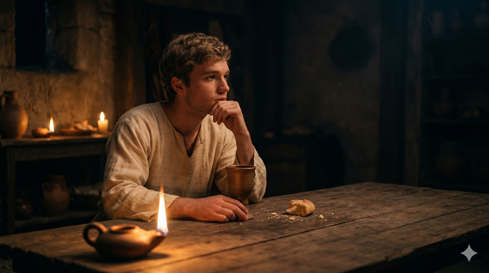

마지막 만찬 장면, 예수님의 품에 기대어 앉은 요한이 베드로의 신호를 받아 고개를 들어 예수님께 조용히 "주님, 누구오니이까"라고 묻는 장면. 촛불빛이 어우러진 다락방의 고요한 분위기.
예수께서 이 말씀을 하시고 심령이 괴로우사 증언하여 이르시되 내가 진실로 진실로 너희에게 이르노니 너희 중 하나가 나를 팔리라 하시니. 제자들이 서로 보며 누구에게 대하여 말씀하시는지 의혹하더라. 예수의 제자 중 하나 곧 그가 사랑하시는 자가 예수의 품에 의지하여 누웠는지라. 시몬 베드로가 머릿짓을 하여 말하되 말씀하신 자가 누구인지 말하라 하니 그가 예수의 가슴에 그대로 의지하여 이르되 주님 누구니이까. — 요한복음 13:21-25
유월절 저녁, 다락방에서의 마지막 만찬 자리였습니다. 예수님이 "너희 중 하나가 나를 팔리라"고 말씀하시자 제자들 사이에 긴장과 의혹이 흘렀습니다. 그 자리에서 "예수의 품에 의지하여 누운 자"로 묘사된 사람이 있었는데, 이 사람이 요한입니다. 요한복음은 그를 자신의 이름 대신 "예수께서 사랑하시는 제자"라고 기록합니다. 당시 식사 문화에서 기대어 눕는 자리 배치는 친밀함의 표현이었습니다. 주인이 가장 아끼는 손님 혹은 가장 가까운 사람이 그 자리에 앉았습니다. 요한이 그 자리에 있었다는 것은 그가 예수님의 가장 내밀한 자리에 있었음을 말합니다.
베드로가 머릿짓으로 "누구인지 물어보라" 신호를 보내자 요한은 주저하지 않고 예수님의 가슴에 기댄 채 그대로 물었습니다. 예수님은 조용히 유다를 향해 떡 한 조각을 적셔 주시며 대답하셨습니다. 요한은 그 비밀을 예수님과 단둘이 나눈 것입니다. '사랑받는 자'의 특권은 정보나 지위가 아니었습니다. 그것은 주님의 마음 가장 가까운 자리에 앉을 수 있는 친밀함이었습니다. 요한이 '사랑하시는 그 제자'가 된 것은 그가 특별히 뛰어나서가 아니라, 그가 주님 곁에 머물기를 선택했기 때문입니다.

만찬이 끝나고 유다가 나간 후, 밤의 어둠이 내려앉은 다락방에서 예수님 곁에 홀로 앉아 있는 요한의 뒷모습.
예수의 품에 의지하여 누웠다"는 표현은 단순한 자리 배치 이상의 의미를 담고 있습니다. 그것은 관계의 밀도를 보여줍니다. 요한은 예수님과 함께 많은 기적을 목격했지만, 그가 '사랑하시는 제자'로 기억된 것은 기적의 목격자이기 때문이 아니라 주님 곁에 머문 사람이었기 때문입니다. 오늘 우리의 신앙도 묻습니다. 나는 예수님 곁에 얼마나 자주, 얼마나 깊이 머물고 있습니까? 바쁜 삶 속에서도 주님의 품에 기대는 시간을 갖고 있습니까?
요한은 말이 많은 제자가 아니었습니다. 이 장면에서도 그는 베드로의 부탁을 받아 조용히 한마디를 물었을 뿐입니다. 그러나 주님의 가장 깊은 비밀을 가장 먼저 알게 된 것은 바로 그 조용한 자리에 있던 요한이었습니다. 하나님의 깊은 것은 소란 속에서가 아니라 주님 곁에 조용히 머무는 자에게 열립니다. 오늘 기도 중에, 말씀을 읽는 중에, 예수님의 품에 기대는 시간을 가져보십시오.
사랑받는 제자의 자리는 따로 있지 않습니다.
주님 곁에 머무는 것, 그 자리가 바로 '사랑하시는 그 제자'의 자리입니다.
오늘, 예수님의 품에 기대어 앉으십시오.